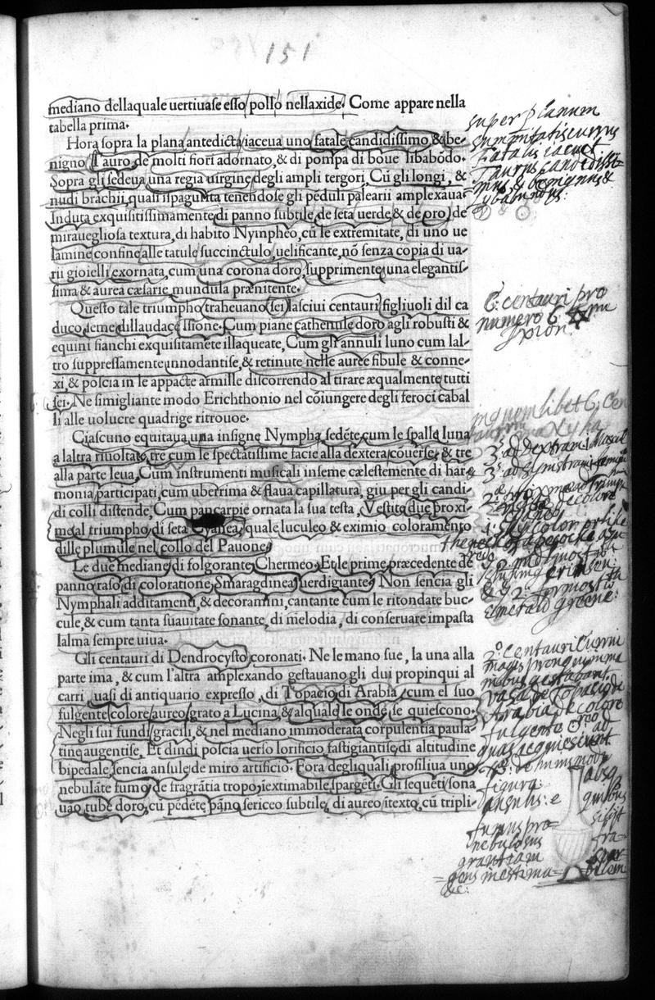

Signature k4r
Folio 76r, Quire k

British Library, London — C.60.o.12
Vision Reading (Phase 3 deep analysis)
Primary hand: Multiple · Hands: 3 · Type: text_page · Sig: k4r
Transcription Attempts
top_right · Italian/Latin · MEDIUM
[...] jocun [...] de le Trionfo [...] la lesta [...] Carro [...]
'Trionfo' (triumph), 'Carro' (chariot). Reader is labeling this section of the HP which describes the triumphal procession — one of the longest continuous narrative sequences in the book
right_margin · Latin · MEDIUM
Centiaurij brevi [...] numero 6 [...] Poloni [...]
'Centiaurij' = centaurs. 'numero 6' = number 6. Reader is counting/cataloging the figures in the triumphal procession. 'Poloni' might be Poles/Polish or a name
right_margin_lower · Latin/Greek · LOW
[...] Nymph[...] [...] Clio[...] [...] Venusg[...]
Names of figures: Nymphs, possibly Clio (muse of history), Venus. Reader cataloging the mythological cast
bottom_right · Latin · LOW
Cornu [...] presta [...] [...] Medus [...] [symbol or drawing]
'Cornu' (horn, possibly cornucopia). Small marks at bottom right may be abbreviated notations
Scholarly Significance
Page 151 falls in the triumphal procession section (pp. 149-167), which is dominated by woodcuts depicting the procession. The annotations show systematic cataloging of mythological figures — counting centaurs, naming muses and nymphs. This is antiquarian indexing, treating the HP as a reference work for classical iconography rather than (or in addition to) reading it as literature or allegory.
Cross-references: Russell thesis Ch. 4 (triumphal procession), Photos 162-180 (procession sequence)
Vision reading (Claude Code, Phase 3)